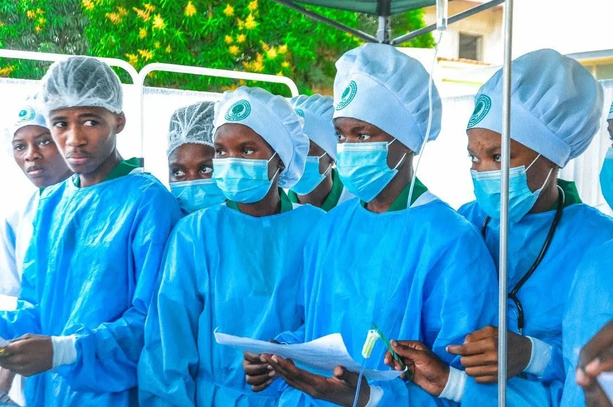
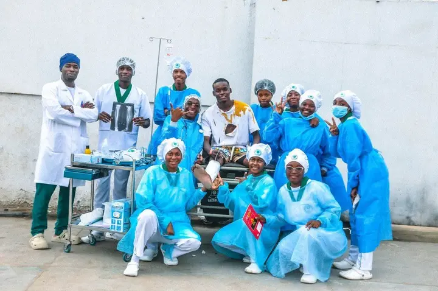
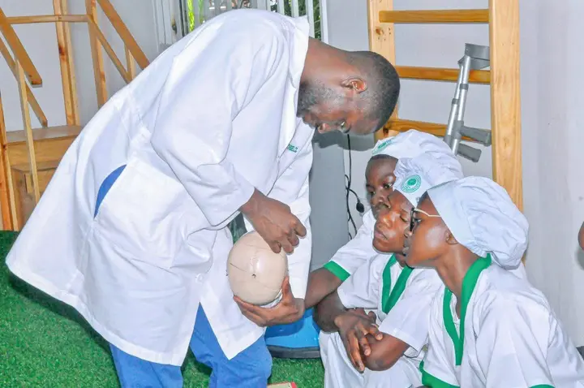

Saúde oral
Estomatologia
Formação técnica orientada para a área da saúde oral.
Solicitar InformaçõesInstituto Técnico Privado de Saúde do Sambizanga
Prepara-te para uma carreira de sucesso através de uma formação técnica orientada para o conhecimento, a competência e o serviço à sociedade.
Formar o Homem para a Vida!


O Instituto Técnico Privado de Saúde do Sambizanga está comprometido com a educação, a saúde e a preparação de profissionais qualificados, contribuindo para o desenvolvimento da sociedade.
Conhece as oportunidades de formação disponibilizadas pelo ITPSS.
Formação técnica orientada para a área da saúde oral.
Solicitar Informações
Formação técnica relacionada com medicamentos e práticas farmacêuticas.
Solicitar Informações
Formação técnica orientada para a reabilitação e recuperação funcional.
Solicitar InformaçõesQuatro ideias guiam a forma como o instituto entende a formação em saúde.

Cursos técnicos para quem quer construir uma profissão ligada ao cuidado das pessoas.
Teoria e prática lado a lado, com trabalho em laboratório e modelos de apoio às aulas.
Um técnico de saúde trabalha para a comunidade. Essa ideia acompanha a formação do início ao fim.
Está no próprio lema do instituto: formar o Homem para a Vida, e não apenas para um exame.
Está preparado para dar o próximo passo na tua formação? Contacta o ITPSS e conhece as oportunidades disponíveis.

Município do Hoji Ya Henda
Rua Eliseu Alves
Junto ao Hospital do Sambizanga (Ex-Escola da Paz)